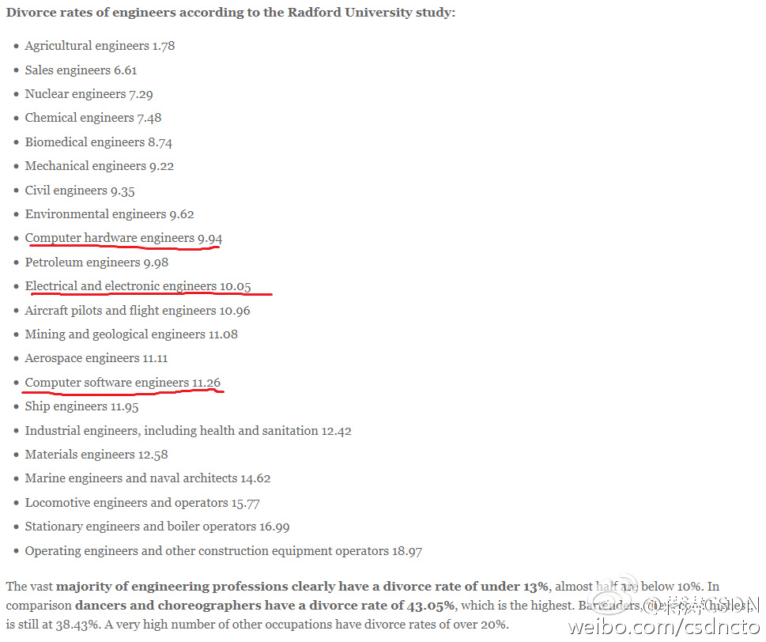

Michael Stonebraker在ICDE的十年最有影响力论文（One Size Fits All": An Idea Whose Time Has Come and Gone）颁奖上的演讲相当精彩，他的观点是：十年后看来不仅不是one size fits all，现在(传统row based数据库) fits nothing -- data warehouse, OLTP, streaming, 数据分析等等都没有它的位置。
美国超过一半的离婚是因为经济原因。工程师多数都干那种长期雇佣按月领工资的工作，在经济方面不容易产生很大变化吧。 //@哥廷根大学:因为死的早吗 //@KOed9:因为，首先… //@Aptor9:因为懒吧… //@索菲鹿:radford还出这个报告…@蒋涛CSDN:工程师是好的结婚对象吗？美国Radford大学研发报告：根据对近500个职业人群离婚率的统计，工程师们总离婚率最低，农业工程师最低1.78%,软件工程师11.26%。离婚率最高的职业人群是舞蹈家43.05%，第二高的酒吧服务生，大部分职业人群离婚率高于20%。 怎么解释工程师们离婚率低呢？ @程序员编辑部 
 48
48